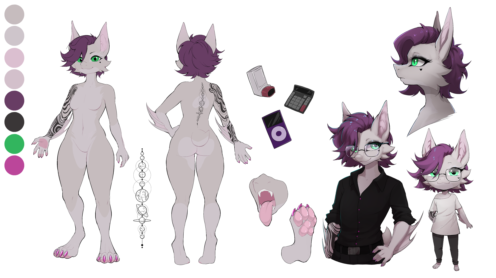
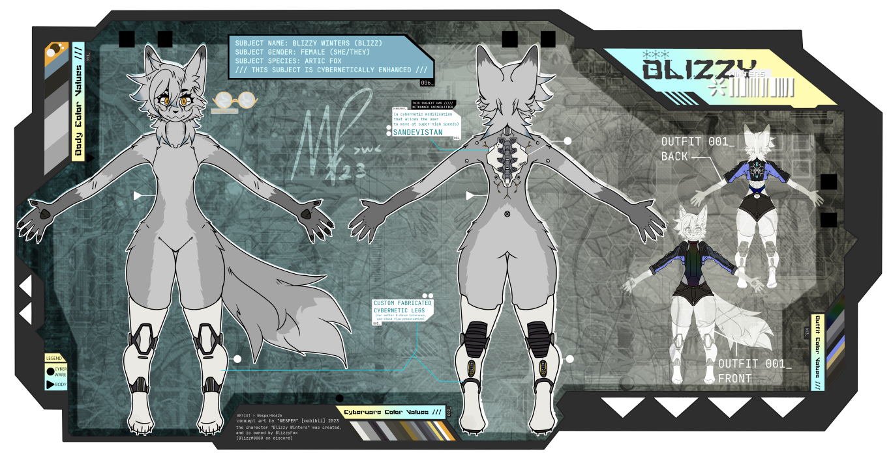
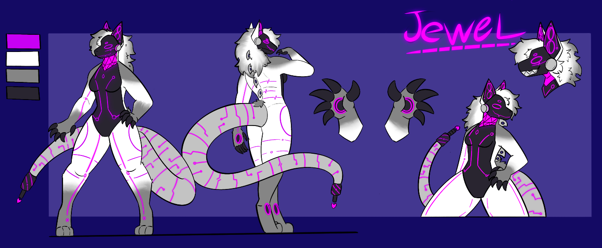

a collection of creatures that I've came up with or own. including true-sona, fursona, o.c., and adopts.
as with all furry art do not use without permission (including in profile pictures) do not redistribute.
do not trace.
Blizzy (shes a bat now) |
|---|
 |
| artist | Doggy131 |
|---|
| about her | Blizzy (she/her) is a fruit bat but she tells everyone she's a vampire bat.
Her arm tattoo is staining from a ferrofluid experiment. She works in bearings and seals research as a mechanical engineer.
Tries to fix things that are old and is drawn to retro tech such as film cameras as the world is becoming increasingly surveiled.
|
|---|
| likes | Making friends. Film photography. Berries. Hacking. Making. Sculpting. Hoarding data. Privacy. Drawing. Robotics. |
|---|
| dislikes | Lonelyness. IPAs. Surveilance. Bigots. Microsoft. Corpos. Seeing others get hurt. |
|---|
Blizzy Fox (when she was a fox) |
|---|
 |
| artist | Caliope |
|---|
| about her | Blizzy (she/they) is an arctic fox. She has cyberwear, including cybernetic legs
some face augments that allow her eyes to be hot swapped and netrunning gear in her back. They are the older version
of my sona, who I have most of my art of and I still quite like. They slowly adated to my transitioning body and a lot
of awkward things happened when I was in this phase.
|
|---|
| likes | Dancing. Shaking her tail. Being edgy. Hacking. |
|---|
| dislikes | Traitors. Backstabbers. Corporations. Body dysmorphia. |
|---|
Jewel (a screenwave) |
|---|
 |
| artist | RetroYoro |
|---|
| about her | Jewel (she/it) a screenwave that loves to dance and sing and jam to music.
She's outgoing and friendly, though is also incredibly scatterbrained often having 3 conversations all at once.
|
|---|
| likes | Parties. Dance Music. Vodka. |
|---|
| dislikes | Being Bored. Silence. |
|---|